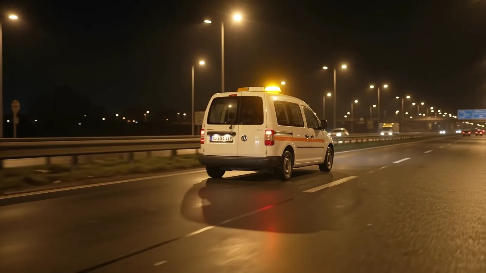
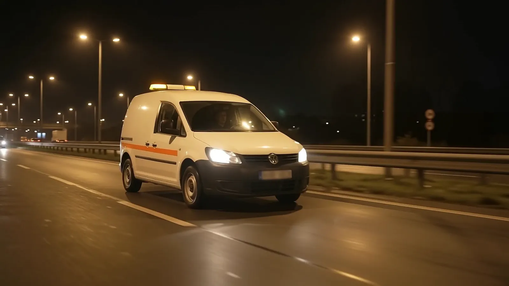

İstanbul'un iki yakasında, otoyolda ve köprüde.
Avrupa ve Anadolu yakasında 38 ilçeye, otoyollara ve köprülere geliyoruz.

Avrupa yakası 25 ilçe
- Arnavutköy
- Avcılar
- Bağcılar
- Bahçelievler
- Bakırköy
- Başakşehir
- Bayrampaşa
- Beşiktaş
- Beylikdüzü
- Beyoğlu
- Büyükçekmece
- Çatalca
- Esenler
- Esenyurt
- Eyüpsultan
- Fatih
- Gaziosmanpaşa
- Güngören
- Kağıthane
- Küçükçekmece
- Sarıyer
- Silivri
- Sultangazi
- Şişli
- Zeytinburnu
Anadolu yakası 13 ilçe
- Ataşehir
- Beykoz
- Çekmeköy
- Kadıköy
- Kartal
- Maltepe
- Pendik
- Sancaktepe
- Sultanbeyli
- Şile
- Tuzla
- Ümraniye
- Üsküdar
Otoyollar ve köprüler
- TEM Otoyolu
- D-100 (E-5)
- Kuzey Marmara Otoyolu
- 15 Temmuz Şehitler Köprüsü
- Fatih Sultan Mehmet Köprüsü
- Yavuz Sultan Selim Köprüsü
- Basın Ekspres Yolu
- Sahil yolları
Uzak ilçeler
Silivri, Çatalca, Şile gibi uzak ilçelerde varış süresi uzayabilir. Aradığında tahmini süreyi net olarak söyleriz.
Konumunu bilmiyorsan
WhatsApp'tan canlı konum göndermen yeterli. Otoyoldaysan kilometre tabelası ya da en yakın çıkışın adı da işimizi görür.
